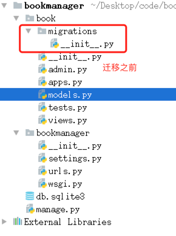
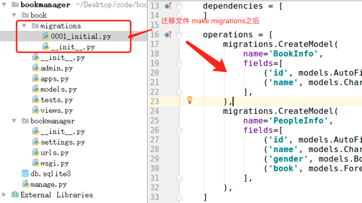

模型
- 当前项目的开发, 都是数据驱动的。
以下为书籍信息管理的数据关系：书籍和人物是 ：一对多关系

要先分析出项目中所需要的数据, 然后设计数据库表.
书籍信息表
| 字段名 | 字段类型 | 字段说明 |
|---|---|---|
| id | AutoField | 主键 |
| name | CharField | 书名 |
| id | name |
|---|---|
| 1 | 西游记 |
| 2 | 三国演义 |
人物信息表
| 字段名 | 字段类型 | 字段说明 |
|---|---|---|
| id | AutoField | 主键 |
| name | CharField | 人名 |
| gender | BooleanField | 性别 |
| book | ForeignKey | 外键 |
| id | name | gender | book |
|---|---|---|---|
| 1 | 孙悟空 | False | 1 |
| 2 | 白骨精 | True | 1 |
| 3 | 曹操 | False | 2 |
| 4 | 貂蝉 | True | 2 |
使用Django进行数据库开发的提示 ：
MVT设计模式中的Model, 专门负责和数据库交互.对应(models.py)- 由于
Model中内嵌了ORM框架, 所以不需要直接面向数据库编程. - 而是定义模型类, 通过
模型类和对象完成数据库表的增删改查. ORM框架就是把数据库表的行与相应的对象建立关联, 互相转换.使得数据库的操作面向对象.
使用Django进行数据库开发的步骤 ：
- 定义模型类
- 模型迁移
- 操作数据库
1. 定义模型类
- 根据书籍表结构设计模型类:
- 模型类：BookInfo
- 书籍名称字段：name
- 根据人物表结构设计模型类：
- 模型类：PeopleInfo
- 人物姓名字段：name
- 人物性别字段：gender
- 外键约束：book
- 外键要指定所属的模型类
book = models.ForeignKey(BookInfo)
- 外键要指定所属的模型类
- 说明 :
- 书籍-人物的关系为一对多. 一本书中可以有多个英雄.
- 不需要定义主键字段, 在生成表时会自动添加, 并且值为自增长.
根据数据库表的设计
- 在
models.py中定义模型类,继承自models.Model from django.db import models # Create your models here. # 准备书籍列表信息的模型类 class BookInfo(models.Model): # 创建字段，字段类型... name = models.CharField(max_length=10) # 准备人物列表信息的模型类 class PeopleInfo(models.Model): name = models.CharField(max_length=10) gender = models.BooleanField() # 外键约束：人物属于哪本书 book = models.ForeignKey(BookInfo)
- 在
2. 模型迁移 （建表）
迁移由两步完成 :
生成迁移文件：根据模型类生成创建表的语句
python manage.py makemigrations执行迁移：根据第一步生成的语句在数据库中创建表
python manage.py migrate
迁移前

迁移后

- 提示：默认采用
sqlite3数据库来存储数据